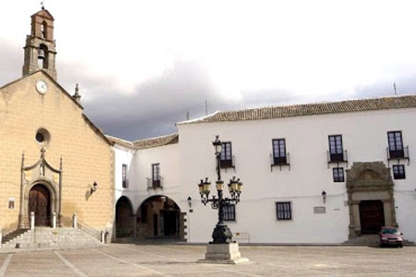
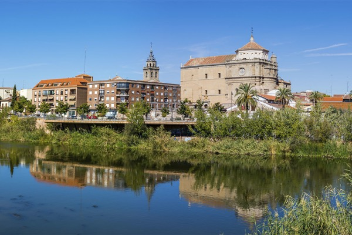

Fernando de Rojas
Fecha y lugar de nacimiento
Nació en 1465 en La Puebla de Montalbán, Castilla y falleció en abril de 1541 en Talavera de la Reina, España. Fue un autor español cuya única obra es La Celestina, un drama en prosa extendido en diálogo, que marcó una etapa importante en el desarrollo de la ficción en prosa en España y en Europa.
Puebla de Montalbán

Talabera de la Reina

Vida y obra
Hasta donde se sabe, La Celestina es el único libro que escribió Rojas y pocos detalles de su vida han salido a la luz. Lo que se sabe es que fue abogado, estudió en la prestigiosa Universidad de Salamanca y perteneció a una noble familia de conversos; judíos que adoptaron el cristianismo. El origen de La Celestina también tiene un aire de misterio. Según Rojas él se topó con el primer acto, titulado La comedia de Calisto y Melibea, mientras estaba en Salamanca. Este primer acto supuestamente había sido escrito por un autor anónimo. Rojas se sintió tan encantado con el trabajo que decidió ampliarlo y completarlo mientras reposaba de su oficio como abogado. Del primer acto, nace un drama sobre dos jóvenes enamorados que tienen una noción popular de lo que era el amor en la época de Rojas. Este ideal lo llevan a un extremo que causa trágicas consecuencias para ellos mismos y para aquellos que los rodean.